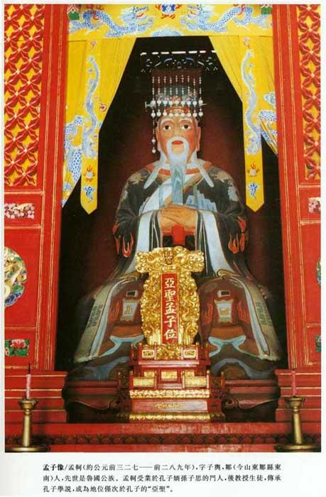
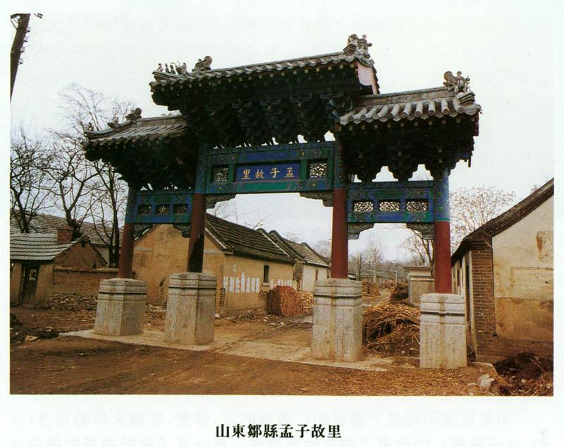
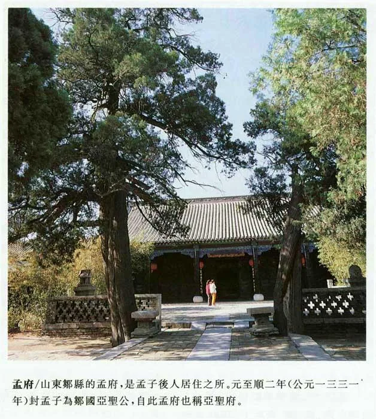
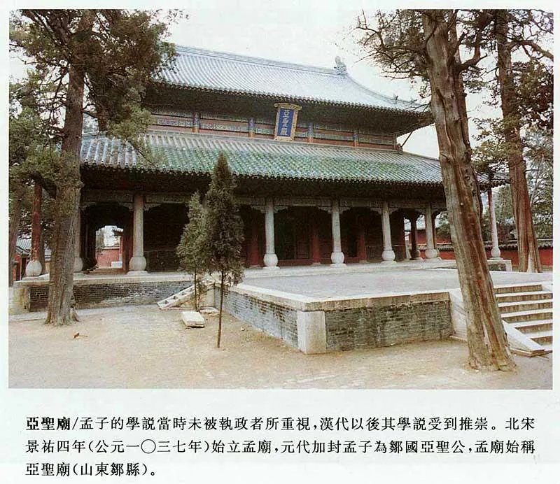
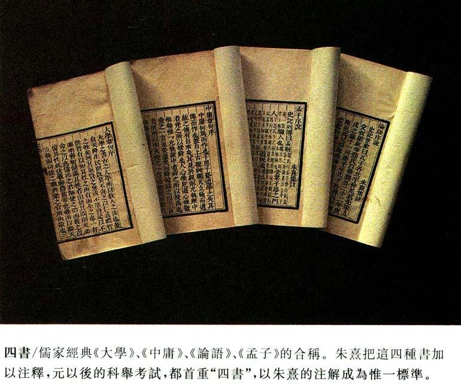

孟 子

|
参考资料 史記卷七十四
孟子荀卿列傳第十四
太史公曰：余讀孟子書，至梁惠王問「何以利吾國」，未嘗不廢書而歎也。曰：嗟乎，利誠亂之始也！夫子罕言利者，常防其原也。故曰「放於利而行，多怨」。自天子至於庶人，好利之獘何以異哉！ 孟軻，騶人也。〔一〕受業子思之門人。〔二〕道既通，游事齊宣王，宣王不能用。適梁，梁惠王不果所言，則見以為迂遠而闊於事情。當是之時，秦用商君，富國彊兵；楚、魏用吳起，戰勝弱敵；齊威王、宣王用孫子、田忌之徒，而諸侯東面朝齊。天下方務於合從連衡，以攻伐為賢，而孟軻乃述唐、虞、三代之德，是以所如者不合。退而與萬章之徒〔三〕序詩書，述仲尼之意，作孟子七篇。其後有騶子之屬。 〔一〕 索隱軻音苦何反，又苦賀反。鄒，魯地名。又云「邾」，邾人徙鄒故也。 正義軻字子輿，為齊卿。鄒，兗州縣。 |




参考书目：
1.“十三经”本《孟子注疏》，东汉·赵岐注，北宋·孙奭疏。
2.《孟子集注》，宋·朱熹。
3.《孟子正义》，清·焦循。
4.《孟子译注》，杨伯峻，中华书局。